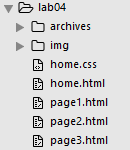
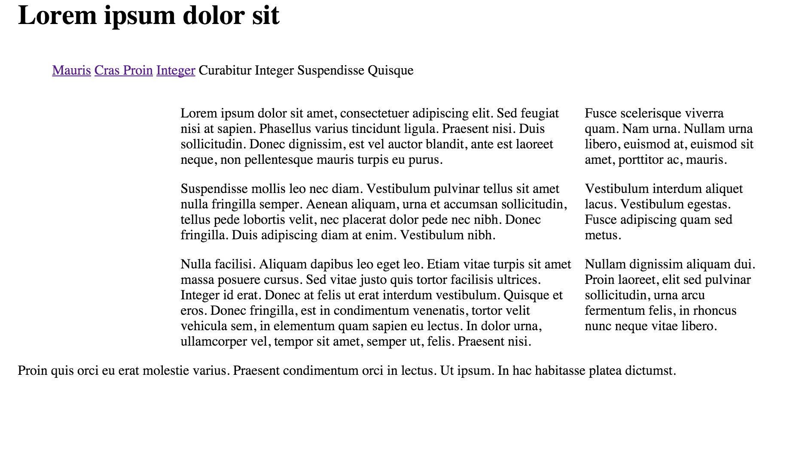
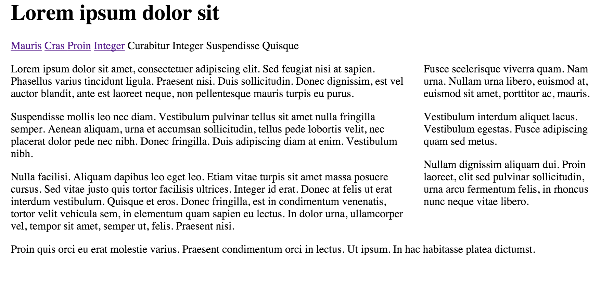
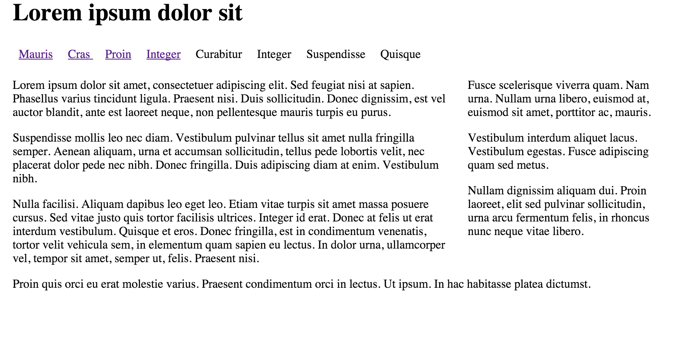
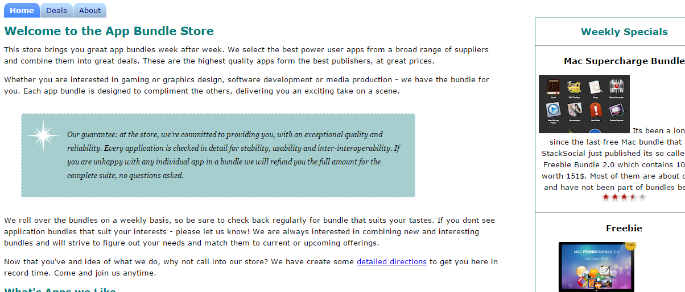

Objectives
Restructure the output of the last lab to participate in a tabbed navigation structure, and then produce a simple application mockup using these techniques. Do this by introducing a simple tabbed design into the site to provide the user with the visual metaphor for navigation. We then 'wire-up' these tabs to lead the user through the site. We will do this twice: once for the example content we laid out in last weeks lab. Then we will apply this to the app store site, using the same CSS rules.
Setup
For this lab, start with the this project here:

This archive contains the following pages:
Download and expand the zip file above, or alternatively in your browser, you can select 'save link as' or equivalent and save these into your own workstation. To do this you will first have to locate the actual folder in which the lab05 project is stored, save the four files into that folder.
Either way, we wish to use the above as the basis for this lab.
Navigation
On a web page the navigation can be thought of as the table of contents. You expect the table of contents to direct you to the content you want to access.
In this lab we will create a tabbed navigation section that will look like this:

In HTML the element that best suits a table of contents is the <ul> element - which are already using. We will use the ordered list to construct the navigation section of the web page.
Here's the code we have already in our web page:
<div id="navigation">
<ul>
<li><a href="home.html">Mauris</a></li>
<li><a href="page1.html"> Cras </a></li>
<li><a href="page2.html">Proin</a></li>
<li><a href="page3.html">Integer</a></li>
<li>Curabitur</li>
<li>Integer</li>
<li>Suspendisse</li>
<li>Quisque</li>
</ul>
</div>What we have is an item for each link to a page.
Next we want to ensure our navigation tells the user which page they are currently viewing. We do this by added a class attribute to the appropriate list item. So if we edit the home.html page first we want to add the class attribute "current" to the first list item (Mauris) as below:
<div id="navigation">
<ul>
<li class="current"> <a href="home.html">Mauris</a></li>
<li><a href="page1.html"> Cras </a></li>
<li><a href="page2.html">Proin</a></li>
<li><a href="page3.html">Integer</a></li>
<li>Curabitur</li>
<li>Integer</li>
<li>Suspendisse</li>
<li>Quisque</li>
</ul>
</div>We must also do this for page1, 2 and 3. So for page1.html add the class attribute "current" to the second list item (Cras). For page2.html add it to the third list item (Proin) and for page3.html add it to the fourth list item (Integer)
When viewing out web pages this makes no visible difference as all we are doing is identifying those elements we will no go on to style in a particular way.
Forming the Tab
Make sure the 'navigation' division is located towards the top of the page structure between the header and the maincontent. (If you copied the output of last weeks lab, it will be near the end) If we were to take a view of any of the pages using the folding feature if eclipse, we would like to see this:

There are several methods for creating nice navigation on your site, the method we teach in this lab is a pure CSS method using different background colour for 'tabs' on the navigation menu.
Before you go any further make sure your site is 'navigable' without any broken links.
Next we are going to mark each of <ul> elements with a new id menu:
<div id="navigation">
<ul id="menu">
<li class="current"><a href="home.html">Mauris</a></li>
<li><a href="page1.html"> Cras </a></li>
<li><a href="page2.html">Proin</a></li>
<li><a href="page3.html">Integer</a></li>
<li>Curabitur</li>
<li>Integer</li>
<li>Suspendisse</li>
<li>Quisque</li>
</ul>
</div>Do this now for all pages - as the navigation section appears everywhere.
Again, before you go any further make sure your site is 'navigable' without any broken links. There should be no change in the appearence as yet.
In your css flle, change the navigation rule to make that section the full width:
#navigation
{
width: 100%;
float: left;
}This will have the effect of making the navigation section pop up to the top of the page:

In yoiur css file, introduce this rule at the very end:
ul#menu li
{
display:inline;
}
This is make the navigation section now appear all on one line:
Refresh the page - can you see a difference? If you cant, delete the rule and refresh again until you can see the small change.
One last change for this step - change maincontent to be the full width of the page:
#maincontent
{
width: 100%;
float: right;
}
Establishing the Tab Bar
Next add the following rule to the home.css file:
ul#menu
{
margin: 0;
padding: 0;
}This has the effect of tightening the navigation section - and more closely aligning it with the left of the page. It will be useful as a basis for the next few adjustments (make sure you can see the difference).

Lets revist the `ul#menu li" rule - extending it with three properties as shown here:
ul#menu li
{
display:inline;
line-height: 2em;
padding-right: .5em;
padding-left: .5em;
}The page should now look like this:

So, what's happening here? We are setting the height of the menu (which will be our bar of tabs) to 2 em units (which is twice the height of the letter 'm' in the current font) In most browsers, this is automatically calculated because all the list items (tabs) will be 2 em units in height.
The padding left and right are both set to .5 to avoid any spacing inside and outside the list.
Next we'll style the default state for each link item (tab) inside the menu:
ul#menu a
{
text-decoration: none;
}
This 'turns off' the underlining of links, which will make our tabs look more distinctive.
Styling the Tab
Our page is navigable now, but the user has no real idea of what page they are visting. Then cannot even tell if the list long the top is in fact a navigation panel.
We can do two things to fix this:
1: Border
Lets go back to maincontent rule - and adjust it as follows:
#maincontent
{
width: 100%;
float: right;
padding: 2%;
border: blue solid 1px;
}
As you can see, the content area is framed to give additional visual ques to the user
2: Acitve Tab
Now we are ready to activate the tabs. Introduce this rule:
#menu li.current a
{
background: blue;
padding: .5em 2em .5em 2em;
color:white;
}Our page will now have a pleasing tabbed effect:

Your page should behave as follows:
This is the final version of the CSS:
body
{
width: 80%;
margin: 0 auto;
}
#maincontent
{
width: 100%;
float: right;
padding: 2%;
border: blue solid 1px;
}
#navigation
{
width: 100%;
float: left;
}
#header
{
width: 100%;
}
#footer
{
width: 100%;
clear: both;
}
#primary
{
width: 68%;
float: left;
}
#secondary
{
width: 30%;
float: right;
}
ul#menu
{
margin: 0;
padding: 0;
}
ul#menu li
{
display:inline;
line-height: 2em;
padding-right: .5em;
padding-left: .5em;
}
ul#menu a
{
text-decoration: none;
}
#menu li.current a
{
background: blue;
padding: .5em 2em .5em 2em;
color:white;
}Exercises
Completed Lab
This is a complete archive of this lab if you are having difficulty:
This is the completed app store lab:
Exercise 1
We now want to apply the navigation tabs to the app store.
We would like to add a set of tabs for home, deals and about that is positioned just above the main heading.

Work through the steps needed to
- Add the menu section in your html files
- Name the class and id's correctly
- Add the css rules
- Test to make sure your menu works.